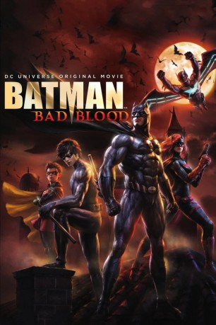

#9058 Batman: Bad Blood
 
 IMDB-Wertung: 6.8 / 10
IMDB-Wertung: 6.8 / 10  Tomatometer: 100
Tomatometer: 100  Metascore: 0
Metascore: 0 
Batman ist weg und keiner weiß, wo er steckt. Denkbar ungünstig in einer Stadt, die ihren dunklen Helden so sehr braucht, wie es Gotham City tut. Zum Glück gibt es da ja aber noch den Rest der Familie. In Batman: Bad Blood schlüpft kurzerhand Alfred Pennyworth ins schwarze Cape, um seinen eigentlichen Träger zu finden. Unterstützung erhält er dabei von Batwoman, Robin und Nightwing...
Jahr: 2016
Dauer: 72 Minuten
FSK: 16
Land: USA Studio: Warner Bros. Home Entertainment GroupTonspuren: DD5.1 - ,
Untertitel: Deutsch,
Auflösung: 1080p (1920x1080) Größe: 2099 MB
Genre: Action, Sci-Fi, Abenteuer, Animation/Trick
Regisseur: Jay Oliva
Drehbuch: J.M. DeMatteis
Soundtrack: Frederik Wiedmann
Darsteller:
Datei: X:\Comic-Trick\Batman\Batman Bad Blood (2016, FSK16, 1920x1080).mkv seit 19.07.2018
Festplatte: Comicverfilmungen+MusikCD
 Es gibt insgesamt 19 Filme in der Gruppe 'Comic-Trick\Batman'
Es gibt insgesamt 19 Filme in der Gruppe 'Comic-Trick\Batman'